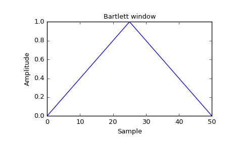

scipy.signal.bartlett¶
-
scipy.signal.bartlett(M, sym=True)[source]¶ Return a Bartlett window.
The Bartlett window is very similar to a triangular window, except that the end points are at zero. It is often used in signal processing for tapering a signal, without generating too much ripple in the frequency domain.
Parameters: M : int
Number of points in the output window. If zero or less, an empty array is returned.
sym : bool, optional
When True (default), generates a symmetric window, for use in filter design. When False, generates a periodic window, for use in spectral analysis.
Returns: w : ndarray
The triangular window, with the first and last samples equal to zero and the maximum value normalized to 1 (though the value 1 does not appear if M is even and sym is True).
See also
triang- A triangular window that does not touch zero at the ends
Notes
The Bartlett window is defined as
\[w(n) = \frac{2}{M-1} \left( \frac{M-1}{2} - \left|n - \frac{M-1}{2}\right| \right)\]Most references to the Bartlett window come from the signal processing literature, where it is used as one of many windowing functions for smoothing values. Note that convolution with this window produces linear interpolation. It is also known as an apodization (which means”removing the foot”, i.e. smoothing discontinuities at the beginning and end of the sampled signal) or tapering function. The Fourier transform of the Bartlett is the product of two sinc functions. Note the excellent discussion in Kanasewich. [R189]
References
[R188] M.S. Bartlett, “Periodogram Analysis and Continuous Spectra”, Biometrika 37, 1-16, 1950. [R189] (1, 2) E.R. Kanasewich, “Time Sequence Analysis in Geophysics”, The University of Alberta Press, 1975, pp. 109-110. [R190] A.V. Oppenheim and R.W. Schafer, “Discrete-Time Signal Processing”, Prentice-Hall, 1999, pp. 468-471. [R191] Wikipedia, “Window function”, http://en.wikipedia.org/wiki/Window_function [R192] W.H. Press, B.P. Flannery, S.A. Teukolsky, and W.T. Vetterling, “Numerical Recipes”, Cambridge University Press, 1986, page 429. Examples
Plot the window and its frequency response:
>>> from scipy import signal >>> from scipy.fftpack import fft, fftshift >>> import matplotlib.pyplot as plt
>>> window = signal.bartlett(51) >>> plt.plot(window) >>> plt.title("Bartlett window") >>> plt.ylabel("Amplitude") >>> plt.xlabel("Sample")
>>> plt.figure() >>> A = fft(window, 2048) / (len(window)/2.0) >>> freq = np.linspace(-0.5, 0.5, len(A)) >>> response = 20 * np.log10(np.abs(fftshift(A / abs(A).max()))) >>> plt.plot(freq, response) >>> plt.axis([-0.5, 0.5, -120, 0]) >>> plt.title("Frequency response of the Bartlett window") >>> plt.ylabel("Normalized magnitude [dB]") >>> plt.xlabel("Normalized frequency [cycles per sample]")
